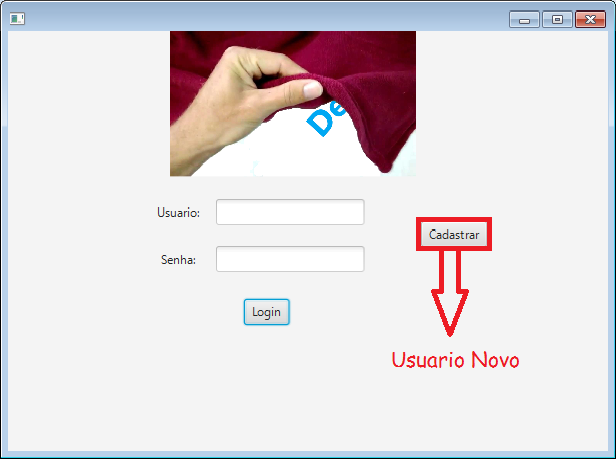
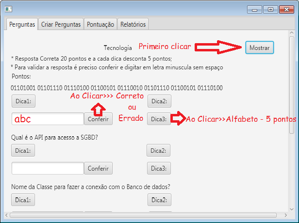
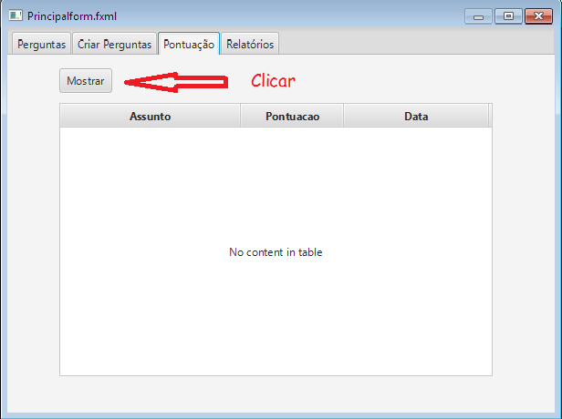
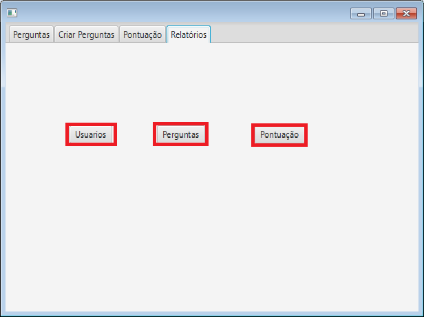

Inicialmente é preciso fazer login, se esta entrando pela primeira vez é preciso digitar nome de login e senha para se cadastrar:
Automaticamente vai ser direcionado ao menu principal do sistema e nesta mesma tela é possivel descobrir as palavra no qual é o odjetivo do sistema, ao clicar em mostrar vai ser gerado as perguntas, sendo que a cada clica gerar diferentes perguntas, ao digitar a resposta é retornado uma mensagem informando se está correta ou não, Caso não saiba a resposta pode-se solicitar dicas, mas a cada uma revelado desconta 5 pontos
No menu pontos é possivel consultar toda a pontuação das questões clicando em mostrar:
Por ultimo é possivel gerar relatórios de usuario, perguntas e pontos, clicando nos botões com a descrição de cada um e aguardando alguns segundo é gerado podendo imprimir ou salvar no formato de pdf:
